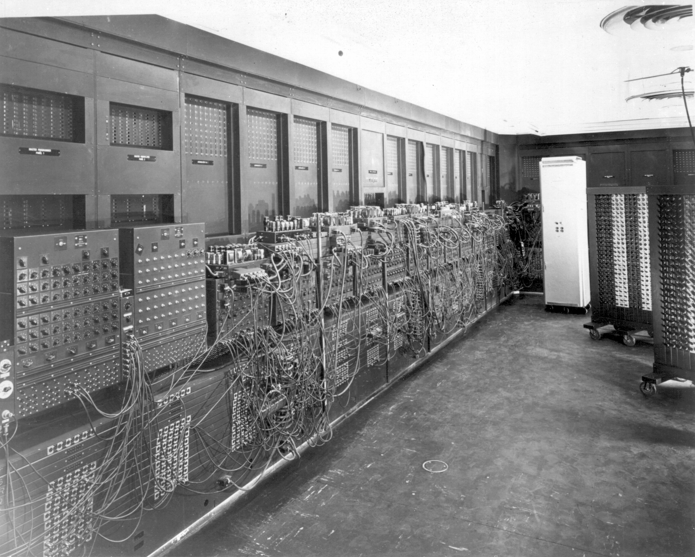

História do primeiro Computador
Os Computadores técnológicos que usamos atualmente no nosso
dia a dia são resultados de vários anos de estudos, testes e
conquistas na área da tecnologia, um grande exemplo é a primeira
geração de computador, estamos falando do ENIAC!

O ENIAC (Electronic Numerical Integrator and Computer) foi o primeiro computador digital eletrônico
e grande escala, o ENIAC entrou em funcionamento em fevereiro de 1946 pelas mãos dos
cientistas norte-americanos John Eckert e John Mauchly, da Electronic Control Company.
O ENIAC começou a ser desenvolvido em 1943 durante a Segunda Guerra Mundial para
calcular estratégias táticas para seus soldados.